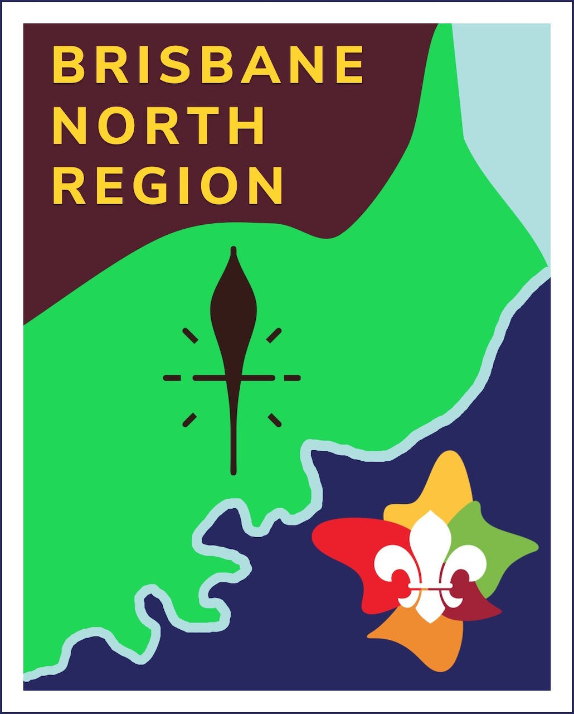
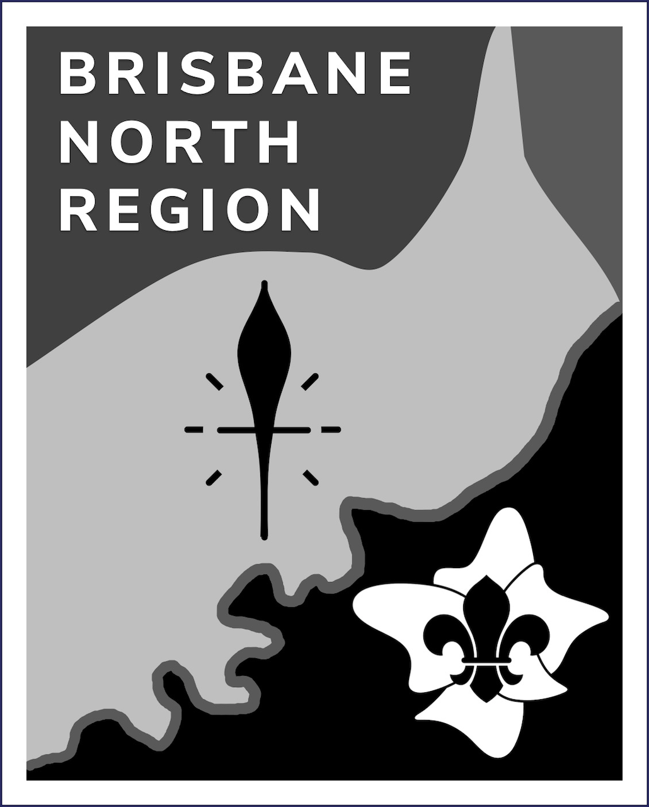

The BNR Badge

The Brisbane North Region badge represents the geographical extent of the region. It includes the following main elements:
The BNR badge may be used on promotional material and correspondence associated with the Region. To do so, right click on the image above and Save to your computer.
A black and white version is available as well if required for printed material. Use of this will ensure compliance with the Scouts Australia brand requirements.

Note that this will not produce the same result as the colour version printed black and white.
The badge was designed by Ernie Gibbs, former ARC Venturer Scouts BNR, in response to a competition organised by Hsien-Jin Teoh in 2019.